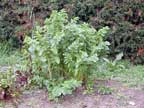
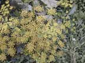
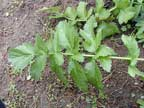
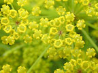
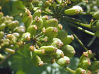

Parsnip
Pastinaca sativa
Other names
Description
The leaves are pinnate, about 50 cm long, dull green and hairless. The plant can grow up to two metres tall and in the late summer has yellow flowers. The fruit is strongly flattened and winged. The large whitish root of the domestic parsnip is a commonly eaten vegetable.
Similar plants
Cultivated parsnips are selected forms of the wild sp. Only the roots of both are edible. Cow parsnip, more commonly called giant hogweed, is different. It produces similar but more severe signs.
Distribution
Wild parsnip likes a damp environment and is scattered in various places in both the North and South Islands. Domestic parsnip is widely cultivated in market gardens around the country. For this reason stock may have a higher likelihood of contacting domestic parsnip than wild.
Toxin
The leaves and flowers contain phenolic furanocoumarins, also known as psoralens, which have a phototoxic effect. This results from direct contact of the skin with the furanocoumarins in the leaves. When the skin is exposed to sunlight or light of between 320nm and 380nm the furanocoumarins on the skin absorb light energy and become activated, reacting with proteins and causing a bullous dermatitis (called a phytophotodermatitis). This is more severe when the skin is moist. When ingested, parsnip plants may also cause gastric irritation. Season: dermatitis is most likely to occur when the parsnips are actively growing in summer to autumn. Most market gardens will dig up their crop in late autumn.
Species affected
Both animals and humans are affected, although reports of toxicities in animals are rare. Dermatitis in people is common.
Clinical signs acute
In humans a bullous dermatitis, after exposure to sunlight, in areas which can contact the plant, such as the legs and face.
Clinical signs chronic
Post mortem signs
Diagnosis
May be based on distribution of lesions, a history of contact with parsnip plants and ruling out other forms of dermatitis.
Differential diagnosis
These include contact dermatitis (a frequent misdiagnosis) and other causes of bullous dermatitis, such as viral, allergic and autoimmune diseases. Less likely would be other causes of phototoxic and other dermatitis such as facial eczema.
Treatment
Removal from the plants and if very severe, perhaps antibiotics to avoid bacterial skin infection.
Prognosis
Good after removal from exposure.
Prevention
References
Conner H.E. The Poisonous Plants In New Zealand. 1992. GP Publications Ltd, Wellington
Parton K, Bruere A.N. and Chambers J.P. Veterinary Clinical Toxicology, 2nd ed. 2001. Veterinary Continuing Education Publication No. 208
|  plant |
 |
|
|
 |
 |
|
|
 |
||
|
|
|
|